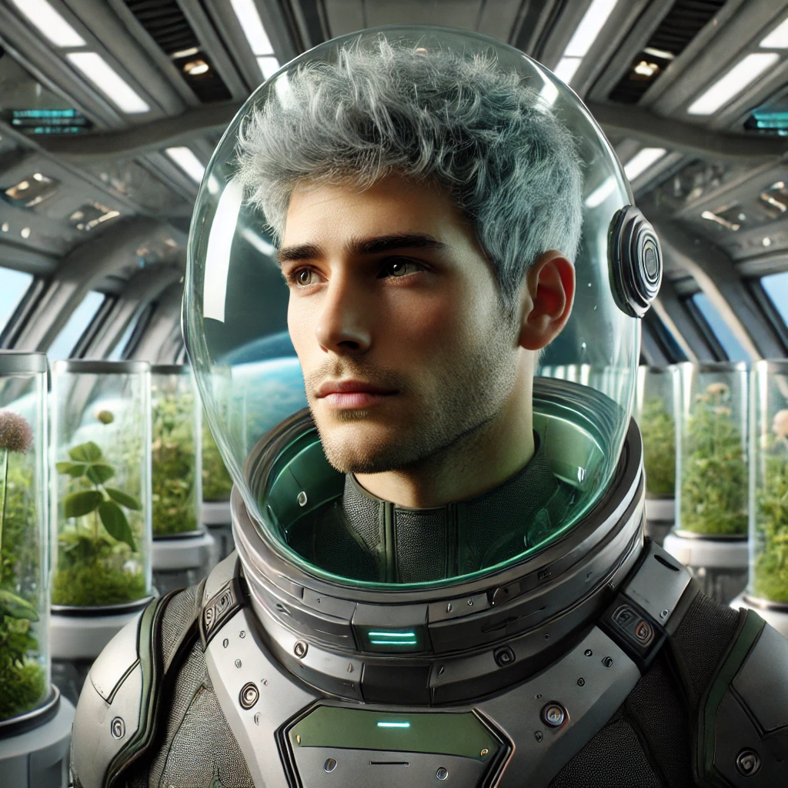

Summary
Intergalactic botanist with a passion for finding alien plants while traveling the cosmos
Intergalactic botanist with a passion for finding alien plants while traveling the cosmos
June 3019 - Current
January 3000 - May 3001